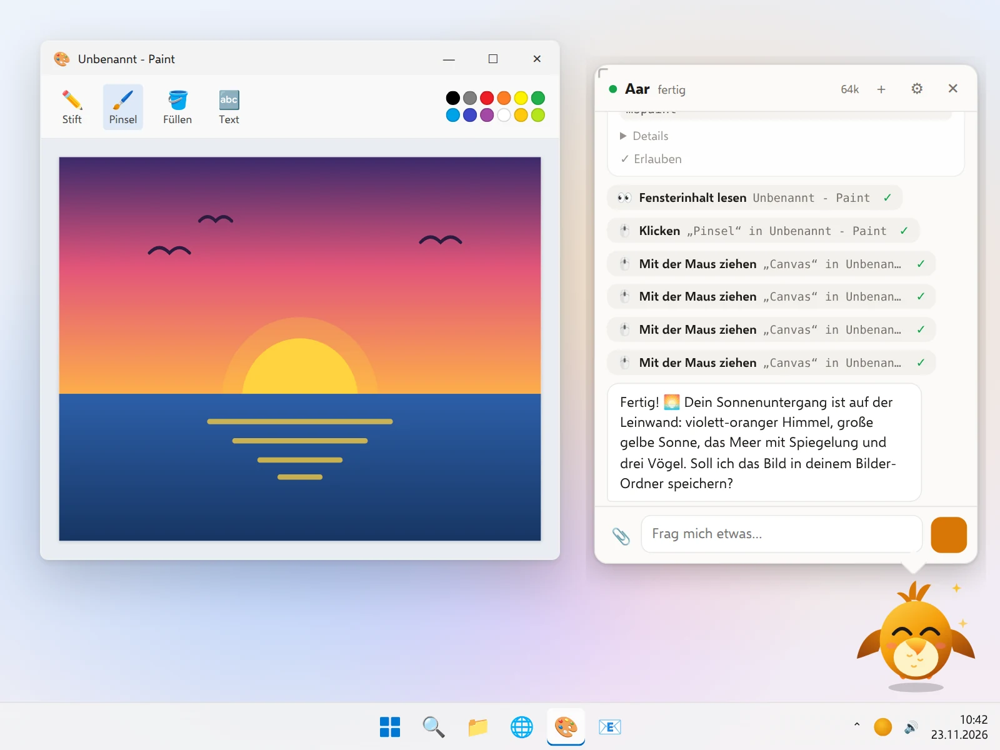
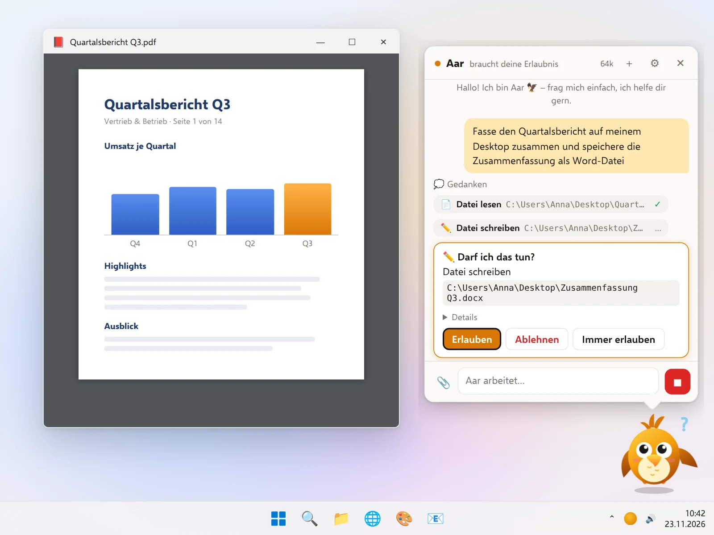
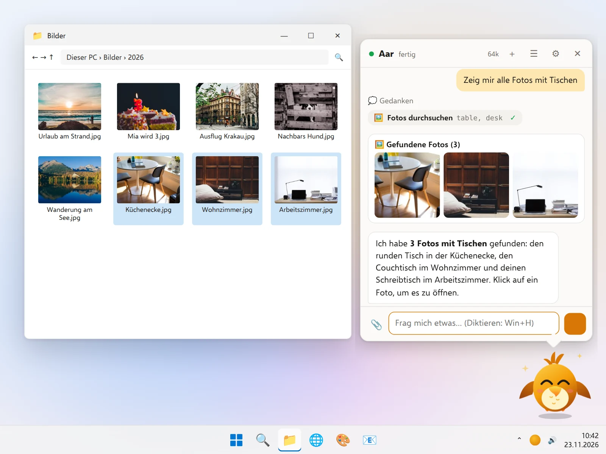
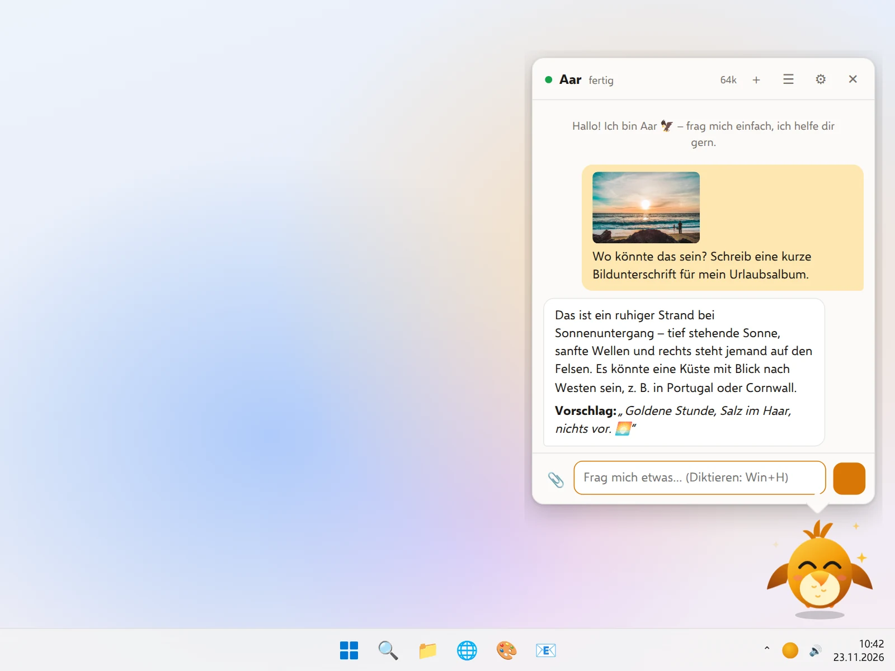
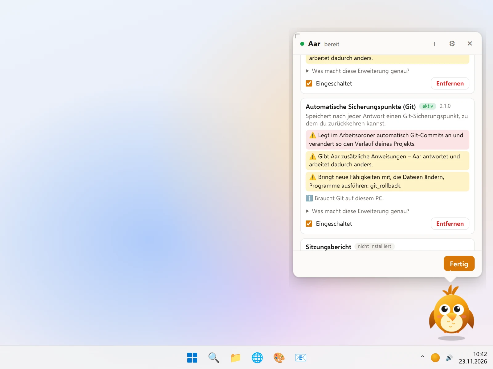
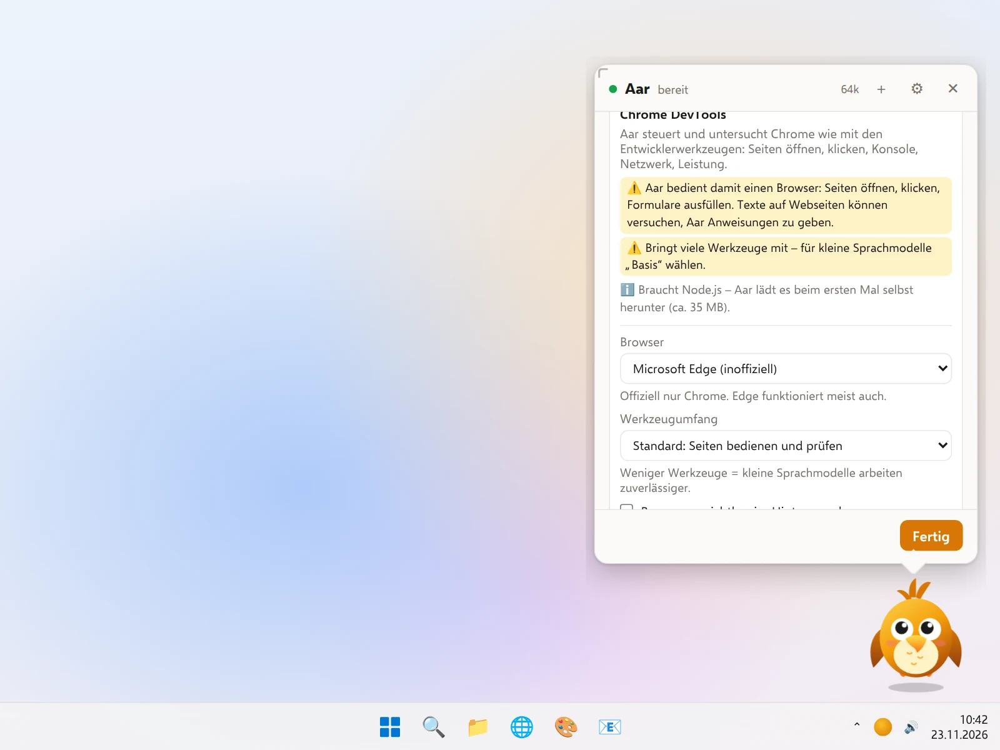
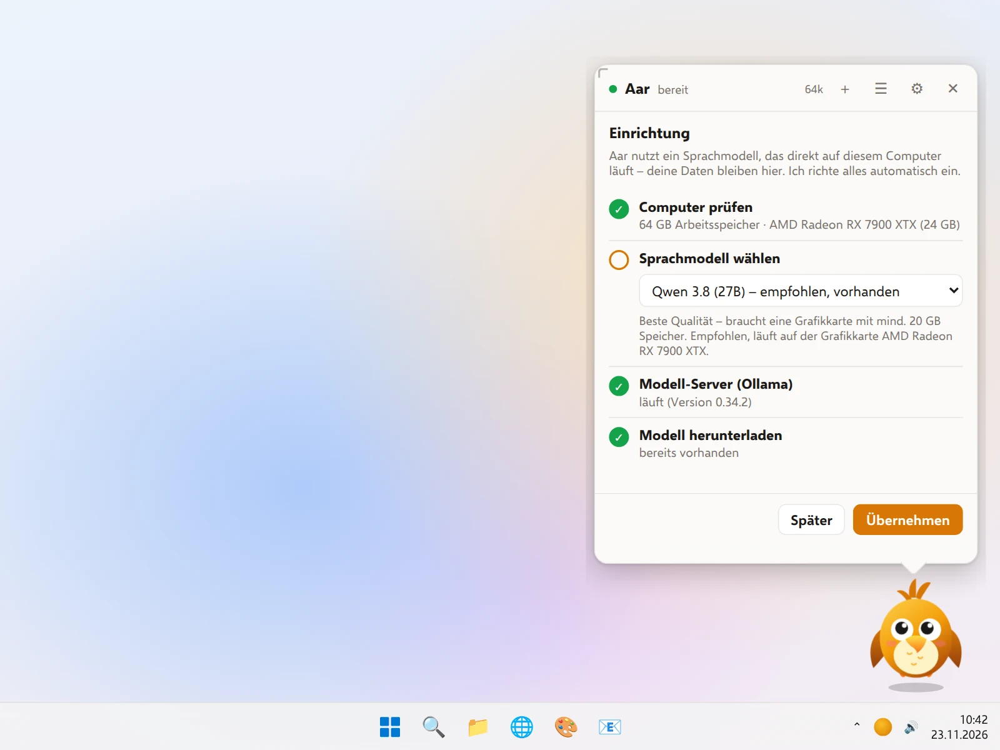

Ein genauerer Blick.
Echte App, echte Oberfläche – klick auf einen Screenshot, um ihn zu vergrößern (1600×1200).

01Bedient die Programme, die du hast
„Öffne Paint und male einen Sonnenuntergang über dem Meer“Der mitgelieferte Windows-Desktop-Server lässt aar Fenster und Bedienelemente sehen wie ein Bildschirmleser – und dann klicken, tippen und ziehen.
- Fenster- und Knopfnamen statt Handles
- Bildschirmfotos, wenn er hinschauen muss
- mit einem Häkchen abschaltbar

02Nichts ändert sich ohne dein Ja
„Fasse den Bericht zusammen und speichere ihn als Word-Datei“Lesen ist in Ordnung, Schreiben wird erfragt. Die Karte sagt in einfachen Worten, was und wo – Details für Neugierige.
- Erlauben · Ablehnen · Immer erlauben
- „Vorher fragen“, „Ohne Nachfrage arbeiten“ oder „Nur lesen“
- der Adler hebt ein Fragezeichen

03Findet Fotos nach ihrem Inhalt
„Zeig mir alle Fotos mit Tischen“Ordner in den Einstellungen auswählen; das lokale Bildmodell beschreibt jedes Foto einmal (mit Grafikkarte etwa 2–5 s). Danach findet die Suche sofort.
- Gegenstände, Anzahl der Personen, drinnen/draußen, sichtbarer Text, Jahr
- auch HEIC vom Handy
- der Index bleibt auf dem PC und ist jederzeit löschbar

04Zeig ihm ein Bild
„Wo könnte das sein? Schreib eine Bildunterschrift“📎, Drag & Drop oder Einfügen. Die App verkleinert das Bild vorher auf 1280 px – ein Foto kostet so etwa 1000 Tokens statt 10 000.

05Erweiterungen mit ehrlichen Warnhinweisen
Direkt aus der aar-Erweiterungs-Registry. Vor der Installation: wofür sie gedacht ist. Danach: was sie wirklich registriert – Eingriffe in Aktionen oder Nachrichten, zusätzliche Anweisungen, Werkzeuge mit Nebenwirkungen.
- riskante brauchen einen zweiten Klick
- abschalten, ohne zu deinstallieren
- installiert für das aar, das du wirklich benutzt

06Werkzeug-Server anschließen
Ein kleiner Katalog mit Einstellungsdialogen – z. B. Chrome DevTools mit Browser, Werkzeugumfang, unsichtbarem Modus und voreingestelltem --no-usage-statistics. Node.js wird beim ersten Gebrauch geladen.
- Python: Webseiten, Dokumente, Uhrzeit
- Node: Playwright (Edge), Chrome DevTools, Gedächtnis
- eigene: Programm + Argumente + Umgebung oder URL + Header

07Mit einem Klick eingerichtet
Auf einem neuen PC öffnet sich der Assistent von selbst: Er prüft Arbeitsspeicher und den echten Grafikspeicher, empfiehlt ein Modell, installiert Ollama still und lädt das Modell mit Fortschrittsanzeige herunter.

08Spricht deine Sprache
Deutsch, Englisch und vereinfachtes Chinesisch – automatisch wie Windows oder in den Einstellungen gewählt. Tray-Menü und Fehlermeldungen inklusive.